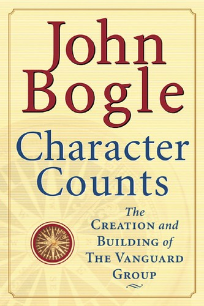

1974年，约翰·博格（John C. Bogle）在威灵顿管理公司内部权力斗争中失去最高管理职位，却仍担任旗下基金的董事。原管理公司不允许他继续负责投资管理与基金销售，他便抓住尚未被夺走的基金行政权，提出由基金共同拥有一家管理公司的方案；1974年9月24日，先锋集团（The Vanguard Group）成立。这项限制反而把行政、投资管理和销售三种职能拆开，迫使博格逐项争取董事会批准。与外部股东持有基金管理公司的传统结构不同，先锋由旗下基金所有，基金又由投资者持有，管理服务按成本提供。博格后来向美国证监会解释，这种安排要让基金"为股东利益而组织、运营和管理"，而不是服务董事、管理人员、投资顾问或销售商。先锋1975年5月1日开始运营时只有28名员工，管理约14亿美元资产；1976年又推出面向个人投资者的指数基金，把低成本结构变成具体产品。
《Character Counts: The Creation and Building of The Vanguard Group》由麦格劳-希尔（McGraw-Hill）于2002年出版，共304页。它不是第三方传记，而是博格把1974年至2001年间向先锋员工发表的42篇讲话按时间重编，并为每篇补写背景与评论。五个阶段从公司起步、1980至1985年的扩张，写到1986至1990年的市场停顿、1991至1995年的继续推进，以及1996至2001年的规模化。期间先锋终止销售佣金，建立直接分销，扩展货币市场基金与债券基金，并让最初被讥为"博格的愚行"的指数基金逐渐成为核心业务。到书中时间线结束时，先锋管理资产约5300亿美元、服务约1500万名投资者。新增评论还记录了"九一一"事件对员工的影响，使公司历史不只是资产和产品里程碑，也包括危机时怎样对待客户与员工。
书名里的"Character"指一套通过语言和制度反复强化的组织品格。先锋把员工称为"船员"（crew），基金名称取自英国海军战舰HMS Vanguard；博格在周年讲话、市场低迷和业务扩张时不断重申低成本、诚实、长期服务与投资者优先。他后来用一句话概括这种所有权逻辑："We are owned by the shareholders. Our mission is to serve them and not some outside management company owner."书中最有分量的材料，是这些原则如何落到费用率、无销售佣金、指数基金和直接面向客户的分销方式上。共同所有权取消了向外部管理公司支付利润的必要，规模扩大后节约下来的成本可以通过降低费率回到基金持有人；这正是博格所说"投资者所有、为投资者服务"的经济机制。资产从14亿美元增至数千亿美元，并不自动证明品格高尚，但费用下降与共同所有权至少提供了可以核对的制度结果。
这本书的局限也来自材料来源：42篇内部讲话都由创始人本人选择、解释，重复口号很多，对高层冲突和失败决策的视角并不独立。它更接近一部带注释的创始人文献集，而非平衡的公司史。把讲话按年份连续阅读的好处，是能辨认管理层在牛市与熊市是否坚持同一套说法，也能看出"文化"如何依靠周年仪式、称谓和反复叙述维持。读者若把它与博格后来的《足够》对照，会看到两本书的分工：《品格至上》解释先锋如何用所有权、成本和员工文化建造机构，《足够》则把同一套受托观念用于批评整个金融行业。目前没有查到正式中文版，因此这里采用自然译名《品格至上：先锋集团的创建与发展》。